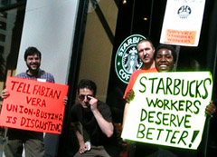
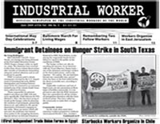

Submitted on Mon, 06/01/2009 - 5:35pm
Disclaimer - The opinions of the author do not necessarily match those of the IWW. The image pictured to the right did not appear in the original article, we have added it here to provide a visual perspective. This article is reposted in accordance to Fair Use guidelines.

Critics use a website and social media to portray the coffee giant as anti-union. The company denies being a bad employer.
By Patrick McDonnell - Los Angeles Times, May 28, 2009
Starbucks a hub of union-busting and worker exploitation?
Say it ain't so, Howard Schultz!
The Starbucks chief executive, who actively
cultivates a socially progressive image, is in the cross hairs of a
new-media campaign designed to bolster union representation at the
retail giant and beyond. For five years, Starbucks has been the target
of a limited but sometimes nasty unionization drive that has tarnished
its reputation for high-minded benevolence.
But last week, Brave New Films in Culver City launched an ambitious "Stop Starbucks" offensive, including a website (stopstarbucks.com)
featuring a four-minute video that was also posted on YouTube assailing
Starbucks' treatment of workers, along with a petition demanding that
Schultz "quit following Wal-Mart's anti-union example." By week's end,
almost 12,000 had signed the petition, while nearly 40,000 had viewed
the video, organizers said.
The anti-Starbucks onslaught also
featured an attempted Twitter "hijacking" designed to undermine a
Starbucks promotion in which contestants vied for prizes by submitting
photos of themselves at Starbucks cafes. The virtual saboteurs
forwarded the required "Twitpics" but hoisted signs blaring seditious
mottos such as "I want a union with my latte" or Schultz "makes
millions, workers make beans."
Submitted on Thu, 05/28/2009 - 3:30pm

Headlines:
- Immigrant Detainees on Hunger Strike at South Texas ICE Facility
- International May Day Reports
- Baltimore Marches for Living Wages
Features:
- First Independent Trade Union Forms in Egypt
- Farewell to FWs Franklin Rosemont and Jennie Cedervall
- Anzac Day Commemoration of the IWW Anti-Conscription Campaign
Download a free
PDF copy of this issue.
Submitted on Sat, 05/23/2009 - 3:31pm
May 17, 2009 marks five years since baristas at a Starbucks in New York
City announced their membership in the Industrial Workers of the World and
launched a campaign open to employees throughout the company. A worker-led
organizing effort with the legendary IWW at the world's largest coffee chain
could have been a flash in the pan? brilliant and inspiring, but brief. But a
fire was lit and a movement began. The idea that Starbucks workers could
organize themselves and speak in their own voice, independent of company
executives and union bureaucrats, could not be restrained.
The bosses did their best to defeat us, to bury any indication of our
existence under a heap of lies and retaliatory firings. They tried to stamp us
out, even as the campaign for secure jobs and a living wage burst from New York
into Illinois, Maryland, Michigan, Minnesota and beyond.
While Starbucks used the economic crisis as a pretext for an all-out
assault on our already meager standard of living, our struggle gained momentum
this year amidst a stark decline of the company's brand and widespread store
closures. Baristas around the country and around the world made the decision to
organize and fight back against severe cuts in work hours, chronic under
staffing, and a new "Optimal Scheduling" program which forces many workers to be
available to Starbucks for over 80 hours a week without being guaranteed a
single work hour.
This journey has been full of set-backs and tests of will. Progress has
been made yet much remains to be done. But one thing is certain: our voice for
dignity is firmly planted and our union?s future is bright.
Submitted on Fri, 05/08/2009 - 1:15pm
By Diane Krauthamer
Despite the torrential late spring rain, thousands of workers spent their May Day marching and rallying through the streets of Manhattan, displaying solidarity with workers at home and abroad. New Yorkers celebrated this international workers’ holiday with actions, events, marches and rallies, coordinated by a number of labor unions, community associations, political parties and non-profit organizations. In the spirit of celebration, the New York City IWW marched on Starbucks to demand that the coffee giant treat its workers with respect.
Beginning with a 2:00 pm a rally in the heart of Chinatown, the IWW joined hundreds of individuals from community and labor organizations to demand “Equal Rights for All Workers.” IWW members Stephanie Basile and Vance Hinton delivered powerful speeches on top of the soapbox.
“May 1st is the real Labor Day. They want us to forget that, but we’ll never forget. It was through collective action that those before us made the gains we currently enjoy today,” Basile said.
Submitted on Wed, 05/06/2009 - 2:47pm
Featured Story 15 - NC and VA Drivers Laid Off, IWW Responds

In a move seen often by workers attempting to improve workplace conditions, trucking bosses fired 15 drivers in North Carolina and Virginia early in January this year. The companies claim it was for decreased business volumes, but most of the drivers were among internal organizers for the IWW. In addition, the companies began hiring new drivers immediately following the lay offs. "We have no doubt this was in retaliation for our organizing efforts," one driver said at a meeting held January 17.
The IWW conducted a scheduled meeting, January 17, which was originally planned to formally establish the union was altered to determine how to proceed with the organizing effort given the firings. Undeterred by the boss’s aggression, many drivers (including many of those laid off) still joined the union. A petition for charter is still being circulated.
In an outpouring of altruism, IWW members across the globe responded to the layoffs by donating money to the struggling drivers. IWW members in Cambridge, England and Cologne, Germany held fundraisers to help the drivers in NC and VA. This act indicates that Wobblies everywhere believe in this movement. The money has been an incredible help to the drivers and the campaign in general. The campaign continues in the Southeast.
Download a Free Copy (PDF)